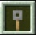
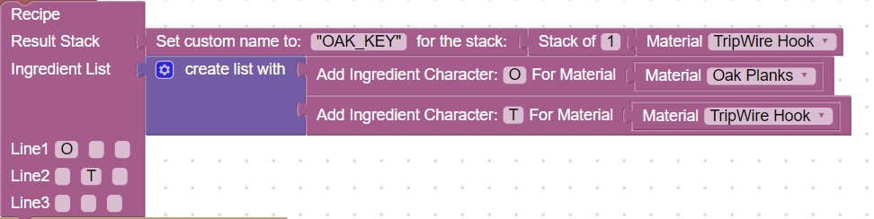
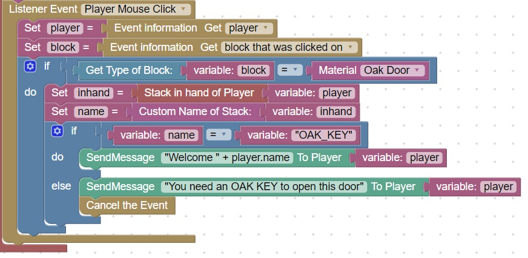
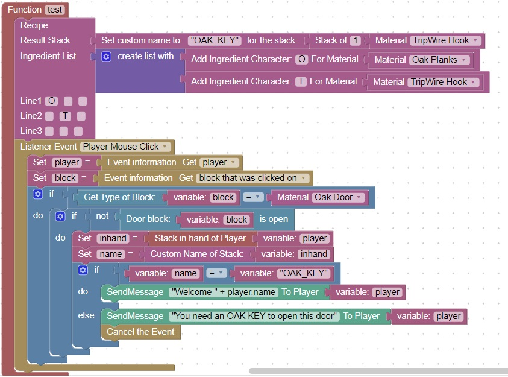
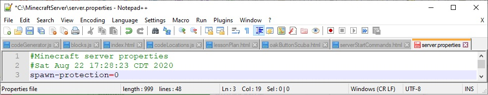

Door Key
Note: Perform an update as described here before attempting this homework (thanks).
Since minecraft has no keys, some people have used a tripwire-hook as it resembles a key in appearance:

We will make a special tripwire-hook and give it a custom name to allow us to lock doors.
- Create a recipe for a tripwire-hook with a custom name: "OAK_KEY"
- When a player opens a door, and the OAK_KEY is not in their hand, cancel the event
- Only cancel the event if the door is not already open (so that can close the door without a key)
Recipe for special OAK_KEY

Test out your code by seeing if you can craft an "OAK_KEY"
Create a player mouse click listener event to check for "OAK_KEY"

You can test your code by trying to open an oak door when the key is not in your hand. The door should remain closed.
Add a check if the door is not open already
Add another if statement to check if the door is open, before cancelling the event
You can use this complete diagram as a reference:

You can test your code by trying to close the door when the key is NOT in your hand. It should close, but not open.
Minecraft Issue: Spawn Protection
The is something called spawn protection which inhibits the opening of doors when they are within 16 blocks of the spawn point.
If you are having trouble opening a door it could also be due to this feature
To disable spawn-protection, edit the server.properties file and change spawn-protection=16 to spawn-protection=0
